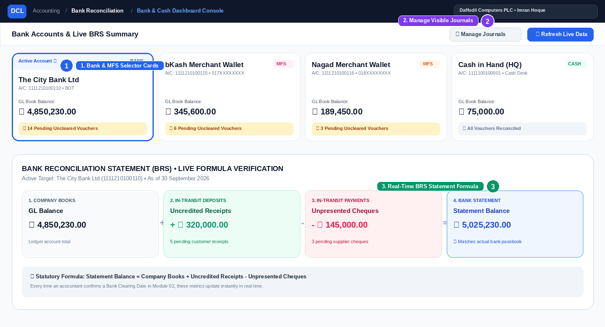
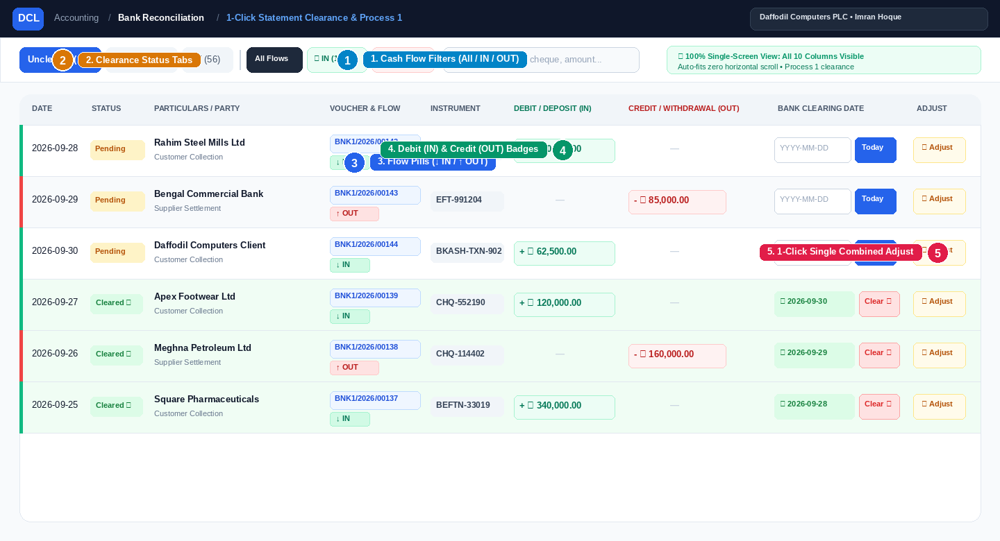
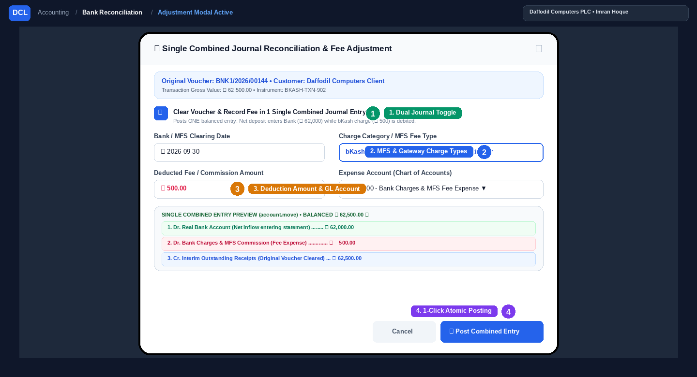
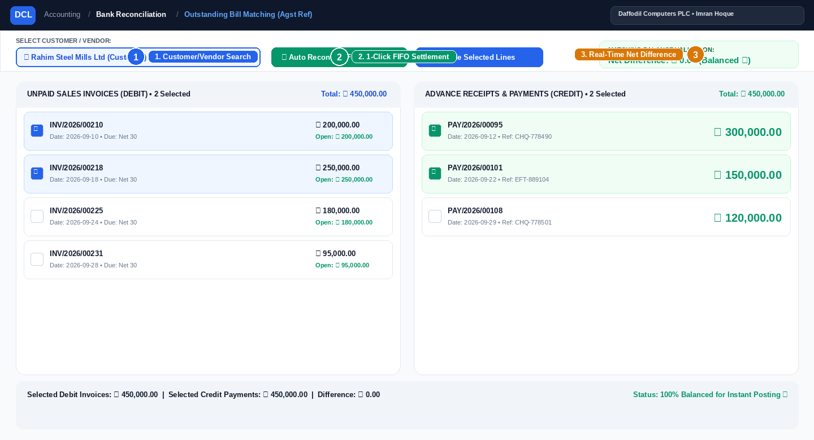

Next-Generation Bank Statement Clearance, Process 1 Automated Settlement Entries, Multi-Channel MFS Fee Handling (bKash / Nagad / POS / Gateway), and Bill-by-Bill Matching for Odoo 18.
Access the centralized reconciliation workspace with a single click from your main Accounting top bar menu.
Seamlessly switch between your commercial bank accounts, mobile financial wallets (bKash, Nagad, Rocket), and cash desks. Real-time Tally-standard formulas compute your uncleared deposits, uncleared payments, and exact bank statement balances instantly.

Displays all corporate bank and wallet accounts (The City Bank, B-Kash, Cash Desk, Card Terminal). Click any card to switch the active workspace and instantly load that account's pending transactions.
Action: 1-Click to Switch Active AccountClick the "⚙ Manage Journals" button to open the account visibility manager. Customize which bank, cash, or credit card accounts appear on your dashboard without modifying chart settings.
Feature: Personalized Account Workspace
Calculates and displays the exact financial formula:
Balance as per Company Books
+ Amounts not reflected in Bank (Deposits)
- Amounts not reflected in Bank (Payments)
= Balance as per Bank Statement
Search, filter, and reconcile hundreds of bank payments and collections in a 100% Single-Screen View (Zero Horizontal Scroll). Every transaction features unmistakable direction indicators (↓ IN for Deposits vs ↑ OUT for Payments), color-coded values, and 1-click Process 1 clearing.

Instantly isolate transaction direction:
• All Flows: View combined bank transactions.
• 📥 IN: Focus exclusively on customer receipts, collections, and bank inflows.
• 📤 OUT: Focus exclusively on vendor payments, transfers, and expense disbursements.
Toggle between Uncleared Only (focus on unpresented cheques and uncredited deposits), Cleared Only (view historical cleared entries), and All Transactions.
Workflow: Focus Exclusively on Unreconciled
Each line features the voucher link alongside an unmistakable flow badge:
• ↓ IN : Cash entering bank.
• ↑ OUT : Cash exiting bank.
Rows also feature color-coded left indicator borders for instant visual scanning.
Complies strictly with universal bank asset accounting rules:
• Debit / Deposit (IN): Emerald Green Badge with + ৳ ... (Asset Increases).
• Credit / Withdrawal (OUT): Crimson Red Badge with - ৳ ... (Asset Decreases).
Prevents any confusion between accounting Debits/Credits and cash inflows/outflows.
• Click "Today": Confirms bank statement date and executes Process 1 automated clearing.
• Click "Adjust": Opens the Single Combined Entry modal for bKash, gateway, or bank difference deductions.
• Click "Clear" on cleared entries: Instantly reverses the clearing move and restores the voucher safely.
• Quick Presets: Instant filter buttons for [ Today ], [ This Month ], [ Last Month ], [ This Quarter ], [ This Year ], and [ All Time ].
• Intuitive [ ↺ Reset ]: Clear custom date selections and restore full ledger visibility in a single click.
• Zero State Loss: Active journal, date periods, status tabs, and IN/OUT flow filters automatically save to sessionStorage. Returning from transaction forms preserves all active filters.
Engineered to proportionally fit 100% of standard desktop and laptop resolutions (1366×768, 1080p, 1440p, 4K). You never have to scroll right to see the clearing date or adjustment actions.
When clearing vouchers that incurred merchant deductions, gateway commissions, or bank charges (e.g. customer paid ৳ 62,500 and a ৳ 500 bKash fee was deducted), DCL Pro posts the entire transaction in 1 Single Combined Journal Entry. The real bank account receives the exact net amount (৳ 62,000) that hits your bank statement.

"Clear Voucher & Record Fee in 1 Single Combined Journal Entry" is active by default. It combines the interim clearing and the fee into a single atomic entry, avoiding clutter in your journal ledger.
Result: Exactly 1 Balanced Entry Created
Pre-configured business fee categories tailored for Bangladesh & regional commerce:
• bKash Payment / Cash Out Charge
• Nagad Payment / Merchant Charge
• Rocket / Upay / MFS Gateway Fee
• Online Payment Gateway Fee (SSLCommerz / Shurjopay)
• POS Card Swiping / MDR Charge
• Bank Charge, Excise Duty & Cheque Bounce Fees
Enter the exact amount deducted by the gateway (e.g. ৳ 500.00). Select your designated Bank Charges / Merchant Commission expense account from the Chart of Accounts dropdown.
Action: Enter Amount & Select GL AccountClicking "Post Combined Entry" creates ONE entry: Real Bank receives net money, fee expense is debited, and interim voucher line is credited & reconciled in 1 single transaction.
Execution: 1 Single Combined Move✓ Original customer voucher is marked CLEARED on bank statement date with zero orphan entries.
Safe 1-Click Rollback: Clicking "Clear" cancels and unlinks this entry cleanly.A common operational challenge for Bangladeshi businesses: A customer pays an invoice via bKash Merchant today. The next day, bKash automatically transfers the funds into the company's real bank account (e.g., The City Bank) after deducting their service fee (e.g., ৳ 500 fee on ৳ 62,500 deposit). How does an accountant reconcile this cleanly without double-counting?
When the customer pays the invoice (e.g. ৳ 62,500), register payment against the invoice using the bKash Journal.
Result: Dr. bKash Interim & Cr. Customer Receivable (Invoice is Paid).
Next day, bKash settles funds into your City Bank Account: ৳ 62,000 net enters your bank statement, while ৳ 500 is retained by bKash as service charge.
In DCL Bank Rec Pro, open the bKash voucher row, click "Adjust", select The City Bank as Destination Journal, enter ৳ 500 fee, and click "Post Combined Entry"!
Match unallocated customer advance payments against open customer invoices, or match vendor prepayments against purchase bills. Supports 1-click FIFO auto-reconciliation and manual multi-bill allocation.

Type customer or vendor name. The console instantly queries the database to retrieve all unpaid sales invoices and unallocated advance payments belonging to that party.
Action: Search Customer / VendorClick "Auto Reconcile (FIFO)". The system's algorithm matches the oldest outstanding invoice against the earliest received advance payment in strict chronological order.
Algorithm: Chronological FIFO SettlementCalculates the sum of checked invoices and payments in real time. Highlights green with a zero difference (৳ 0.00) when debit and credit lines perfectly match before final submission.
Safety: Real-Time Debit vs Credit BalancingHow DCL Bank Reconciliation Pro preserves standard General Ledger integrity while ensuring that real bank liquidity accounts are never modified before physical statement confirmation.
Complies with international ERP financial governance: pending payments remain in dedicated suspense/outstanding clearing accounts until cleared.
When an accountant registers a payment or bill voucher in Odoo:
Accountant verifies physical or online bank statement:
System auto-generates & posts clearing journal:
A detailed operational comparison illustrating how DCL Pro eliminates manual accounting friction, minimizes entry errors, and automates dual-journal reconciliations.
| Workflow / Capability | Standard Odoo 18 | Manual Journal Entry | DCL Bank Rec Pro |
|---|---|---|---|
|
1-Click Statement Clearing Date Set clearing date without opening or modifying original invoice/payment move |
Manual matching widget | Open move & edit lines | ✓ 1-Click "Today" Button |
|
Process 1 Automated Clearing Journal Auto-transfer from interim suspense account into real bank liquidity account |
Requires bank statement line sync | Manual debit/credit lines | ✓ Automated on Bank Date |
|
Single Combined Journal Adjustment Consolidate net bank deposit, gateway fee, and gross voucher clearance in 1 atomic entry |
Manual write-off button | 2 separate manual entries | ✓ 1 Balanced Combined Entry |
|
100% Single-Screen Auto-Fit Layout Zero horizontal scroll guarantee — all 10 columns fit in a single responsive viewport |
Wide scrolling required | Standard form view | ✓ Zero Horizontal Scroll |
|
Cash Flow Direction Segregation Instant visual recognition with ↓ IN (Deposit) & ↑ OUT (Withdrawal) pills and flow filters
|
Not segregated visually | Plain debit/credit table | ✓ Visual Flow Pills & Filters |
|
Dual-Context Amount Headers & Badges Explicit Debit / Deposit (IN) & Credit / Withdrawal (OUT) columns with green/red badges
|
Generic debit/credit only | Monochrome numbers | ✓ High-Contrast Badges |
|
Merchant Gateway & bKash Auto-Settlement Seamlessly route next-day MFS auto-sweep to real bank minus commission in 1 click |
Requires manual journal voucher | Multi-step re-routing | ✓ 1-Click Gateway Sweep Rec |
|
Dedicated MFS Charge Types Smart defaults for bKash, Nagad, POS Card Swiping MDR, SSLCommerz, Shurjopay |
Generic write-off reason | Manual label typing | ✓ Pre-Configured Categories |
|
Safe Rollback & Un-Clear Reversal Reset clearing date, un-reconcile interim lines, and safely remove clearing entry |
Multi-step manual unmatch | Draft, reverse & delete | ✓ 1-Click "Clear" Button |
|
FIFO Outstanding Bill Settlement Auto-pair advance receipts against open sales invoices chronologically |
Manual line matching | Manual reconciliation | ✓ 1-Click FIFO Algorithm |
Clarifications on accounting governance, transaction safety, and MFS operations.
This is the core design philosophy of Process 1. When a cheque or online receipt is recorded in Odoo, it sits in the Interim Outstanding Account (e.g., 1113113000013) as an in-transit item. Your Real Bank Account only reflects deposits and withdrawals that have actually cleared your official bank statement. Once you confirm the clearing date in DCL Pro, the automated journal transfers the money from the interim account into your Real Bank Account.
DCL Pro includes a fail-safe 1-Click Rollback mechanism. Simply click the red "Clear" button on the cleared voucher row. The system automatically un-reconciles the interim move lines, deletes the generated clearing journal entry, and resets the clearing date back to empty. The transaction returns to its pending state with zero orphan records left behind.
Instead of creating two separate fragmented entries or juggling manual write-offs, DCL Pro generates 1 single balanced journal entry:
• Dr. Real Bank Account: Net deposit amount hitting your bank statement (e.g. ৳ 62,000).
• Dr. Bank Charges & MFS Commission: Deduction fee (e.g. ৳ 500).
• Cr. Interim Outstanding Receipts: Gross voucher amount (e.g. ৳ 62,500), reconciling the customer payment to ৳ 0.00.
This guarantees that your bank statement and General Ledger match to the exact paisa with zero discrepancy!
No. DCL Bank Reconciliation Pro is 100% non-invasive. It works strictly with standard Odoo account.move and account.move.line models using native ORM methods. All standard General Ledger reports, Balance Sheets, Profit & Loss statements, and audit trails remain completely intact and standard-compliant.
Accountants often click into a voucher or invoice form view to verify partner details, memo lines, or tax invoices. In standard interfaces, clicking the browser or breadcrumb back button resets your view. DCL Pro utilizes browser sessionStorage to preserve your active journal, custom date ranges or presets (like [ Today ] or [ This Month ]), clearance tab, and flow filter. You return exactly to your active audit state with zero re-entry required.
When clearing entries or adjustments post credit lines to Outstanding Receipts or Outstanding Payments, those credit lines could theoretically appear as uncredited outbound movements. DCL Pro stamps all clearing journal lines with is_bank_clearing_line = True and strictly filters them out of the pending transaction view across all interim and bank accounts. Only genuine business vouchers await clearance.